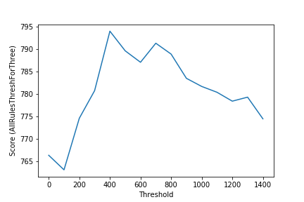

Christmas games - simulation and lazy stats
This Christmas, I was introduced to several new games by my new extended family. Much fun was had making up new games and rediscovering old, but one game annoyed me slightly. A dice game that involved rolling handfuls of dice for different scores and racing to 10000 points - known to the family as ‘Farkle’ but with rules that made it closer to ‘Dice 10000’, also called ‘Zilch’. What bothered me was the fact that, despite much talk of techniques and riskiness, most players tended to follow the same basic strategy, leaving the outcome to chance. As you’ll see, the rules are just complex enough that basic stats thinking / human intuition aren’t always able to give a quick answer as to which choice is best. Anyway, having lost badly on Christmas Day I went home, thought about it for a bit and then spent an hour or two on Boxing Day coding a simulator to test some of my hypotheses. This post documents my experiments.
Here is a basic description of the rules, adapted from http://zilch.playr.co.uk/rules.php
1. Roll the dice
You start your turn by rolling all six dice.
2. Scoring dice? Take some points
If you rolled some scoring dice then you need to take some of those points before you can roll again. See table for scores.
3. No scoring dice? Turn ends.
This means that all the points you took so far are wiped out. You bank no points and it’s the end of your turn. If this is your third zilch in a row then you lose 500 points.
4. Scored 300 or more? Bank the points.
Once you have taken some points you can choose to bank them or keep on rolling the dice. If you bank the points then they are added to your score and your turn is over. If you decide to carry on rolling (see rule 5) then you could roll more scoring dice (see rule 2) but you could also get no scoring dice and end the turn with nothing (see rule 3).
5. Re-roll the remaining dice
You can re-roll any dice that you didn’t score with. Once you have scored points from all six dice you can roll again. In fact, whenever you end up in a situation in which all six are scoring dice, you *must* re-roll.
Scores:
- Two 3-of-a-kinds: 2500
- Three pairs: 2000
- Run of 6 (1, 2, 3, 4, 5, 6) = 1500
- Three of a kind: the number x 100. Three fours = 400. Exception for ones: three ones = 1000. Every additional dice of the same number doubles the score - four fours = 800.
- Ones: 100 each
- Fives: 50 each
To further explain the scoring strategy, let’s look at some example rolls:
[1, 2, 3, 2, 4, 2, 5] - Three 2’s = 200. One 1 = 100. One 5 = 50. The player could keep all scoring dice, bank a score of 350 and end their turn there. They could also keep all scoring dice and choose to re-roll the two non-scoring dice (high risk) or keep a subset of the scoring dice (say, just the 1) and re-roll the rest, hoping for a better total.
[1, 1, 3, 3, 5, 5] - Three pairs, scores 2000 points but the player must roll all six dice again (rule 5). When they do, any prudent player would take any score they can and bank their points, rather than risk the high score by rolling fewer than six dice.
[5, 6, 3, 6, 3, 2, 2] - Only scoring dice is a 5. Player chooses to re-roll the remaining 5 dice and gets [2, 2, 3, 2, 5, 1]. Keeping all scoring dice for 350 plus the 50 from the first roll’s 5. Banks 400 rather than choosing to roll the last non-scoring dice
Building a simulator
Github: https://github.com/johnowhitaker/farkle_sim - follow along in the Jupyter notebook for the code
My goal here was not a full, rigorous treatment of the game to find an optimal strategy. Instead, I merely wanted to answer simple questions like ‘Playing like most people, at what score should I bank rather than risk another roll?’ or ‘With my current strategy, what is my expected average score?’. If you are interested in a more in-depth analysis, check out http://www.mattbusche.org/blog/article/optimal_farkle/ and http://www.mattbusche.org/blog/article/zilch/ where Matt models Farkle as a Markov Decision Process and uses value iteration to hone in on an optimal strategy.
To start with, I create the simplest possible player. It must keep track of its current score (self.temp_score, the sum of all scoring dice kept) and banked score (self.score, the total score banked in previous turns) and how many dice have bee kept, which tells us how many are available for re-roll and whether or not the player has ‘zilched’ (rolled without getting any scoring dice).
class BasicPlayer:
def init(self, name):
self.name = name
self.score = 0
self.temp_score = 0
self.keeping = []
To make it easy for me to extend this basic player later, I define a turn() function that rolls the dice, tracks the score and re-rolls if necessary but I offload the actual strategy logic into another function process_roll() which I can override with more complex strategies later. process_roll() takes a list of dice rolled, appends dice to be kept to self.keeping and updates the score. It returns a True/False (Boolean) value for whether or not the player should roll again and another for whether or not the turn failed. In this most basic case, the player simply keeps all ones and fives rolled, re-rolling if there are 3 or more dice left. This is definitely NOT an optimal strategy but will help check that everything else works. See the BasicPlayer class for the turn() code.
def process_roll(self, roll):
# Returns: (roll_again (bool), fail (bool)
self.kept = 0 # How many dice kept (must be at least 1)
for d in roll:
if d == 1:
self.keeping.append(1)
self.kept += 1
self.temp_score += 100
if d == 5:
self.keeping.append(5)
self.kept += 1
self.temp_score += 50
if (self.kept) == 0:
return (False, True) # Scored no points this roll
elif len(self.keeping) > 3:
return (False, False) # Scored points, 2 or fewer dice remain (so don’t roll again)
else:
return (True, False) # Scored points, and there are 3 or more dice to play with - recomment roll again.
This basic player scores about 214 points in an average turn, but it doesn’t follow all the rules. The next step was to establish a baseline player that followed the rules and had some simple strategy. The process_roll() function now takes all available scoring dice and chooses to re-roll if there are 3 or more dice remaining. This is pretty much what all the players I watched will do, although they will generally bank instead of taking the risk of rolling three dice provided their score is >200 (or >400 if they’re ‘feeling risky’). This baseline player does pretty well despite some obvious flaws, with an average score of ~743. Because of the random nature of the game and the small chance of very high scoring turns (two 2000 point rolls in a row for eg), we need to simulate a lot of turns to get a decent average. 10k turns is enough to show that this baseline player gets 700-750 and well outperforms the BasicPlayer one, but for more subtle improvements I have been running >1 million simulated turns to get reliable results. Luckily, computation is cheap and even my laptop can handle that many number-crunches in seconds.
Refining the strategy
At this point, we’re ready to start asking the questions I had thought of as we played the day before. First up, when should one bank instead of rolling with three dice left?
We make a new player, which takes a number as an argument. If the temp score is below this threshold, it rolls again with three dice (as before). If the score is above the threshold, it banks the score instead. AllRulesThreshForThree is born, and averages closer to 790 when it banks scores above 500. Plotting the average score for different thresholds, we see that anywhere between 400 and 600 does best in this case:

Figure 1 - Performance with different thresholds for rolling with three dice left
Average score is instructive, but I’d like to point out at this point that the point of the game isn’t to get the best average score over one million turns. The point is to be first to 10000. In some cases, especially with lots of players, playing risky will lower your average score but increase the chance of a high score occasionally. Instead of going solely by average score, I’ll also test strategies by pitting them against each other and seeing win percentages. See compare_players(players, n_rounds) in the notebook.
Pitting the baseline player (AllRules) against one that banks on three with a score of 500 or more (AllRulesThreshForThree), we see confirmation that banking with three dice left pays off, winning 52-53% of the time. One thing I do want to note here: even though this strategy yields an average score of 790 vs 740, it still loses 48% of games. I found that even my best strategies didn’t do much better, cementing this game as one of almost pure chance in my mind. Yup, way to suck the fun out of it. I’m sorry.
Back to optimising strategies. The next question I wanted to investigate was whether it was worth keeping those low-scoring fives. One quick modification to the process_roll() logic, which now keeps 5s only if the alternative is going out (self.kept=0) or if we’ve already kept enough other dice that we may as well take anything left with a score (self.kept > 2). Up until now, I had suspected how things would go - improvements were obvious. But this was a question I had no idea about - given [1, 5, 2, 3, 2, 3] was it better to keep just the 1 and re-roll five dice for a better chance at 3 of a kind? Or was it worth keeping the 5 as well and re-rolling four? Turns out, better to only keep 5s when you have to - a strategy improvement that brought the average score up to 808 points per turn.
Risky play as an advantage
I tried some other random changes, but at this point, the best average score seemed to be around 808, re-rolling with three dice if score < 500 and only keeping 5s when necessary. But, as mentioned earlier, I had a suspicion that risky play might work out when playing with larger numbers of players.
Let’s examine just one type of risky play to investigate this. When 5 scoring dice are rolled, a player may choose to roll the single remaining dice. Since the only ways to score with one dice are 1 and 5, there is a 33% chance of success. But success means another roll with all six dice, and potentially even higher scores! So, the player is taking a chance in order to get a higher score 1/3 of the time.
I coded up a player with this behaviour. It includes a threshold - for scores over this threshold, it won’t risk it (neither would you). Initially, this threshold was set at 500. Since it’s relatively rare to get less than 500 points while using all but one dice, the risky play doesn’t hurt the average score much - it drops to ~806. But this is where things get interesting: with three players (one baseline, one playing the best strategy found so far and one playing with this added risky behaviour), the risky player wins slightly less games then the top ‘best’ player. As one might expect given the slightly lower score. But the difference in win percentage is only 0.5%. And when we add more players, a different result emerges.
With 6 players playing the ‘best’ strategy and one taking risks (risking a single dice roll with scores < 700), the risky player still has a lower average score (only 803) BUT it wins more than 1/7 of the time. In other words, the risky behaviour pays off in larger groups. Here are the total wins after each player has had 3 million turns:
wins = {‘dump5s1’: 65559, ‘dump5s2’: 64978, ‘dump5s3’: 65293, ‘dump5s4’: 65080, ‘dump5s5’: 65238, ‘dump5s6’: 65160, ‘risks1’: 66318}
And the average scores:
dump5s1 807.679317
dump5s2 806.118700
dump5s3 806.327633
dump5s4 806.029383
dump5s5 806.765667
dump5s6 807.170067
risks1 802.735333
So, a strategy that wins in two-player mode (dump5s1 beats risks1 50.4% of the time) might not be best in larger groups.
Conclusion
I hope you’ve enjoyed this little experiment. Game theory is complex, but I hope I’ve shown how with a little bit of programming knowledge and a simple enough game you can start testing ideas and playing around in a very short amount of time.
I scratched my itch, and the day after boxing day I followed my optimum strategy diligently and lost a string of games, much to the amusement of all. But I’m happy nonetheless. An afternoon of banging out code, testing ideas and relaxing while my computer simulates billions of dice rolls counts as a win in my book :)